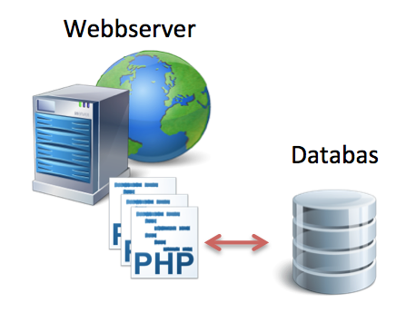

Webbens utveckling

Inspirationen till webben skapades redan 1945. Det var precis efter andra världskriget
och forskaren Vannevar Bush beskrev vad han kallade Memex i sin skrift "As we may think".
Memex för ett förslag på en maskin där man kunde spara all sin information
(böcker, kommunikation, brev o.s.v.) och låta
"maskinen" hålla reda på detta och göra det presenterbart för användaren via
Denna skrift inspirerade många forskare i "computer science", bland annat gav denna maskin
inspiration till skapandet av den första datormusen. Men även idén med "hypertext"
och "hypermedia"
En som använde detta var Ted Nelson som först myntade uttrycket.
Mycket handlade om dokumenthantering och hur man skulle organisera detta.
Ted Nelsons forskning inspirerade i stor grad Tim Bernes-Lee som ses som
fadern till utvecklingen av den moderna webben med HTML som uppmärkning
av information.
Själv tycker han dock inte att webben i form av HTML
"HTML is precisely what we were trying to PREVENT— ever-breaking links,
links going outward only, quotes you can't follow to their origins,
no version management, no rights management"
http://xanadu.com.au/ted/TN/WRITINGS/TCOMPARADIGM/tedCompOneLiners.html
Tim Bernes-Lee jobbade på CERN med informationshantering och skrev
artiklen Information management: A proposal
"A web of nodes where user can browse at will"
Tim försökte sprida sina idéer bland cheferna i CERN men fick som
svar "interesting, but vague
1990 - Utvecklar en applikation World Wide Web
De tre grundbultarna i detta är URL/URI, HTML, HTTP.
Det har funnit flera olika varianter som hade kunnat bli "webben".
En av de största vid denna tiden var Gopher, ett list/menybaserat system med länkar till
olika typer av dokument. Gopher togs fram och drevs av University of Minnesota men 1993
bestämde man att ta ut en licenskostnad för användadet. Detta ledde i sin tur till att
Tim Barnes-Lee:s WWW blev bra mycket populärare då det var helt gratis och släppt med
öppen källkod"
Senare 1993 släpptes den första riktigt populära grafiska webbläsaren "Mosaic".
Detta gjorde att även allmänheten såg en större nytta med webben och fick fart på
utvecklingen.
Mosiacutvecklarna anställdes av Netscape och utvecklade där Netscape Navigator
Den webbläsare som hade störts inflytande när webben var ung. Samtidigt började
andra webbläsartillverkare röra på sig och början till det "browser war" vi känner
till startade. W3C skapades för att hålla koll på standarderna och jobba för
ett bättre helhetsgrepp på hur webben skulle fungera
Webben hade främst beståt av statiska html-sidor som länkade mellan varandra
men tekniker som kunde göra webben mer dynamiskt växte fram. Stöd för datalagraing i databaser
och tätare integration mellan webb och företagens övriga system.
Web 2.0 innebar en mer användergenererad webb. Utvecklingen skedde på gräsrotsnivå
och många nya tekniker (programmerinsgspråk, ramverk, tekniska lösningar) togs fram och
drev webben ytterligare vidare. Många av de idag självklara tjänster skapades och gav
webben en starkare plats i människornas liv. Information utbyts och diskuteras på
bloggar, tweets m.m.
2007 släppte den första iPhonen och trots att det funnits surfmöjligheter
på handhållna enheter var det ändå starten för smartphones och den mobila webben.
Android följde och mängder av telefoner och tekniker som responsive design
följde. Man börjar samtidigt få flera typer av enheter, TV-apparater där man
försöker använda en plattform och får en webb att fungera överallt.
Framtiden är alltid svår att sia om. Något som pratas om i forskarvärden
är begrepp som Semantic Web och Linked Data. Semantiska webben är egentligen
ett gammalt uttryck...kanske till och med utopi. Tanken är att man vill göra
webben och all dess information tillgänglig för applikationer på ett bättre sätt.
Dynamisk webbapplikation
Visa de 10 senaste blogginläggen.
För att lösa detta behöver vi ett serverscriptspråk (t.ex. PHP)
och en databas där informationen ligger lagrad. (backend)

PHP-kod skapar HTML...dynamiskt
Istället för att skriva all HTML för hand...
...kopplar PHP-scriptet upp sig mot databasen, frågar efter de senaste
blogginläggen och skapar, dynamiskt, den HTML-kod som behövs.

 Detta verk är licensierat under en
Creative Commons Erkännande-IckeKommersiell-DelaLika 3.0 Unported Licens.
Detta verk är licensierat under en
Creative Commons Erkännande-IckeKommersiell-DelaLika 3.0 Unported Licens.